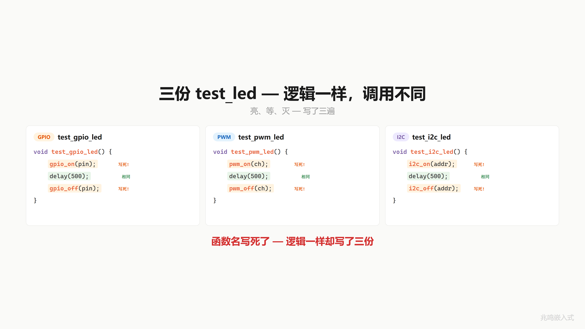
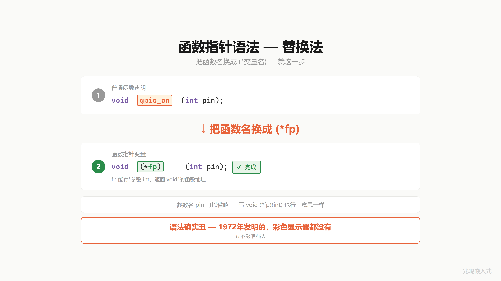
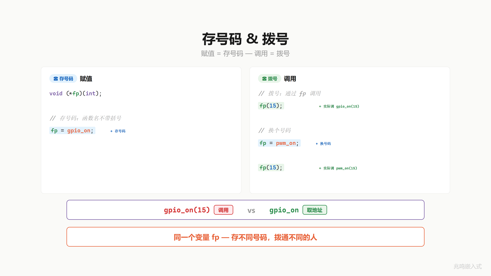
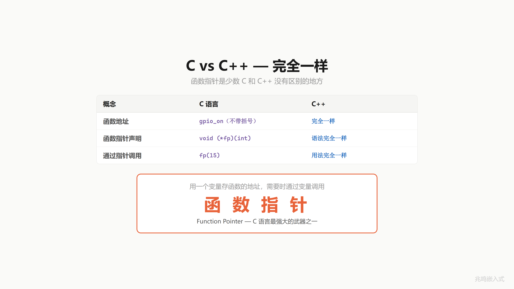
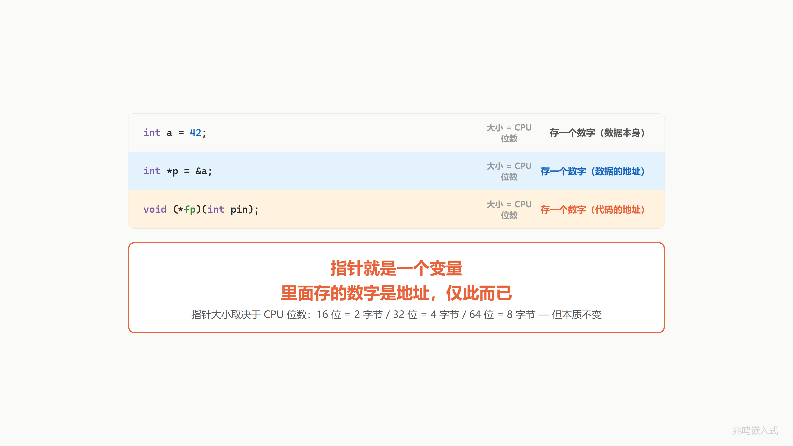

第 7 章 · 写死的函数怎么换 · 函数指针入门
配套代码：oop-in-c/code/07-function-pointer/
7.1 一个真实场景
你想写一个工具函数 test_led，三步：开 → 等 → 关。给它一颗 LED 实例传进去，就能跑完这三步。
但你发现，按当前的代码结构，这个函数你写了三遍：
void test_gpio_led(int pin) {
gpio_on(pin); /* 写死 */
delay(500);
gpio_off(pin); /* 写死 */
}
void test_pwm_led(int channel) {
pwm_on(channel); /* 写死 */
delay(500);
pwm_off(channel); /* 写死 */
}
void test_i2c_led(uint8_t addr) {
i2c_on(addr); /* 写死 */
delay(500);
i2c_off(addr); /* 写死 */
}
逻辑完全一样：亮、等、灭。但调的函数不同。gpio_on 和 pwm_on 名字不一样、功能一模一样，都叫“开灯“。
能不能让 test_led 不关心具体调谁，只说“开灯“，谁来都行？
问题在哪？test_led 里写死了函数名。gpio_on 写在那里，就只能调 gpio_on，换不了。
怎么才能“不写死“？

7.2 函数也有地址
冷静下来问一个问题：test_led 里那一行 gpio_on(pin) 到底是什么？
它最终落到 CPU 上，是一段机器码。每段代码编译完成后，都有一个内存地址。gpio_on 函数有它自己的地址，pwm_on 也有自己的地址，i2c_on 也有自己的地址。
变量有地址你已经习惯了。int a = 42; 这个变量住在 RAM 某个位置，比如 0x2000，&a 取它的地址。
函数呢？函数编译完是一段机器码，存在程序的代码段（.text 段）里。一段机器码的起点也是个地址。gpio_on 这个函数可能从 0x0800 开始，pwm_on 从 0x0900 开始。在 STM32 上你能在 .map 文件里看到这些地址。
地址是个数字。数字能存在变量里。
类比一下你手机里的通讯录：你存了一个联系人“张三“，张三有个电话号码。号码本身是一串数字，你能把它存起来。
函数名就像通讯录里的号码。gpio_on 就是它的号码。号码能不能存进变量？当然能。下一节看怎么存。
7.3 替换法语法
怎么存？C 语言提供了一种变量，专门用来存函数地址的。语法两步替换就出来了。
第一步，写一个普通的函数声明：
void gpio_on(int pin);
读法：gpio_on 是一个函数，接受一个 int 参数，没有返回值。
第二步，把函数名 gpio_on 这个位置，换成一个变量名 fp，外面套一层括号 (*fp)：
void (*fp)(int pin);
完成。fp 是一个变量，它能存“接受 int、返回 void“的函数地址。
读法：从内向外。看到 *fp，fp 是个指针；(*fp)(int pin)，它是指向“接受 int 参数的“的指针；void (*fp)(int pin)，它是指向“返回 void、接受 int 参数的函数“的指针。
参数名 pin 可以省略，void (*fp)(int) 也合法，意思一样。工业代码里 typedef 一长串函数指针类型时常省，下一章会演示。
这语法确实不漂亮。1972 年 Dennis Ritchie 定的，那时候连彩色显示器都没有。后来 C99 / C11 都没改它，因为改了会破坏巨量历史代码。丑归丑，不影响它强大。

7.4 存号码 + 拨号
fp 变量有了，怎么用？
存号码。把 gpio_on 的地址存进 fp：
void (*fp)(int);
fp = gpio_on; /* 注意: 函数名不带括号 */
函数名 gpio_on 在表达式里出现时，会自动退化成“这个函数的地址“（C99 标准 § 6.3.2.1 第 4 段）。所以 fp = gpio_on 等价于 fp = &gpio_on，把那段机器码的起点地址（一个数字）写进 fp 这个变量。
通讯录里存的是号码本身，不是直接拨出去。
拨号。通过 fp 调用：
fp(15); /* 实际调 gpio_on(15) */
fp 加括号是调用：从 fp 这个变量取出地址，跳过去执行那段机器码。等价于 (*fp)(15)，C 标准允许省略 *，所以工业代码里几乎都写 fp(15) 这种简洁版。
换号码。同一个 fp，存进另一个号码：
fp = pwm_on;
fp(15); /* 这次实际调 pwm_on(15) */
fp = pwm_on; fp(15); 拨通的就是 PWM 那一支。同一个变量 fp，存不同号码，拨通不同的人。
记住一对动作：gpio_on（不带括号）= 取号码，gpio_on(15)（带括号）= 拨号。两步动作，两个含义。

7.5 这个东西叫什么
你刚才做的事：用一个变量存某个函数的地址，需要的时候通过这个变量调用函数。
软件工程里有个名字。它叫函数指针（function pointer）。
C++ 里这件事一字不改：
void (*fp)(int) = gpio_on;
fp(15);
声明语法、赋值语法、调用语法都和 C 完全一样。这是少数 C 和 C++ 没有区别的地方。C++ 后来加了 lambda、std::function、virtual 函数作为更高级的封装，骨头还是函数指针，没换。
回到指针本身。前面几章里的指针你见过 int *p 这种数据指针。函数指针和它有什么关系？把三种东西排在一起看：
int a = 42; /* 存一个数字 (数据本身) */
int *p = &a; /* 存一个数字 (数据的地址) */
void (*fp)(int) = gpio_on; /* 存一个数字 (代码的地址) */
三者大小都一样：等于 CPU 位数。32 位 CPU 上都是 4 字节，64 位 CPU 上都是 8 字节。CPU 看到它们时只看到一个数字，不区分这个数字是“数据本身“、“数据地址”、还是“代码地址“。差别在于这个数字的意义：
int a里的数字就是数据本身（42）int *p里的数字是某个int在内存里的地址void (*fp)(int)里的数字是某段机器码在内存里的起点地址
指针就是一个变量。里面存的数字是地址，仅此而已。


7.6 视频里没讲透的几个细节
7.6.1 函数指针变量到底占几个字节
sizeof(void (*)(int)) 在 32 位 ARM Cortex-M 上是 4 字节，在 64 位 PC / ARM 上是 8 字节。和数据指针一样大。
但有一个坑：C 标准没有保证函数指针和数据指针大小相同。C99 § 6.3.2.3 把 function pointer ↔ object pointer 强转列为未定义行为。在常见架构（ARM / x86 / RISC-V）上两者大小一致，跨架构移植代码也都这样假设。但有些 Harvard 架构（早期 8051、AVR）上代码段和数据段地址空间分开，函数指针可能比数据指针大或小。
工业代码里如果遇到 8051 这种古董，要查 datasheet 决定怎么处理。在主流嵌入式平台（STM32、ESP32、Linux SBC）上不用纠结。
7.6.2 调用一次函数指针的代价（直接 vs 间接）
直接调用一个普通函数（编译期就知道跳哪）：
BL gpio_on ; 直接跳转到链接期已知地址 (3 cycle)
间接调用（运行时才知道跳哪，函数地址存在变量里）：
LDR r3, [fp_addr] ; 从 fp 这个变量里读出地址 (3 cycle, 命中 D-cache)
BLX r3 ; 间接跳转 + 写 Link Register (3 cycle)
差别两件事：
- 多一条 LDR：要先把函数地址从内存 load 到寄存器
- 跳转代价不同：直接 BL 编译期 ROM 化，CPU 可以推测执行（branch prediction）；间接 BLX 必须等 r3 的值出来才知道跳哪，对 CPU pipeline 不友好
ARM Cortex-M4（无分支预测器）上两者差距小，约 1-2 个周期。但 Cortex-A 系列（Linux 跑的那种）有完整 branch prediction，间接调用如果 BTB（Branch Target Buffer）没命中，损失可能达到 10+ 周期。
实测：ARM Cortex-M4 @ 168MHz 一次间接调用约 28 ns，168 MHz 下大约 5 个时钟周期。日常驱动调用频率（开关灯每秒几十次到几百次）这点开销完全可以忽略。但要避开几个雷区：
- 中断处理函数（ISR）的关键路径：每个 ns 都要算
- PWM 高频更新：微秒级时序，间接调用的 jitter 会影响波形质量
- 超低功耗 MCU 的 hot loop：M0 没有分支预测，每次间接调用是固定开销，循环 1000 次就是 1000 倍
C++ virtual 函数调用就是这个开销。Stroustrup 那句“零成本抽象“在虚函数这里要打个小折扣（间接跳转 + 编译器没法 inline 虚调用），但这是工程上完全可接受的代价。Linux 内核里 fast-path（中断 + softirq）大量避开虚调用走直接函数，但 slow-path（设备驱动注册、open/read/write 慢路径）几乎全是 ops 表 dispatch。这个分界线是 Linus 反复强调的。
7.6.3 函数指针 vs 普通函数：反汇编对比
两段 C 代码：
/* 直接调用 */
void call_direct(int pin)
{
gpio_on(pin);
}
/* 间接调用 */
void call_indirect(void (*fp)(int), int pin)
{
fp(pin);
}
godbolt 上用 arm-none-eabi-gcc -O2 编译，分别得到（简化）：
call_direct:
B gpio_on ; 一条 tail-call branch
call_indirect:
BX r0 ; r0 已经是 fp, 直接 tail-call jump
call_direct 在链接期就知道跳哪，编译器直接生成一条无条件跳转；call_indirect 直接用入参 r0（按 ARM EABI，第一个参数走 r0）作为跳转目标。这就是“运行时绑定“在汇编层面的具体形态。
7.6.4 函数指针存在哪：text 段 vs 数据段
C 程序编译后大致分这几段（ELF 可执行格式）：
| 段 | 内容 | 权限 |
|---|---|---|
.text | 函数机器码 | r-x（可读可执行不可写） |
.rodata | 常量数据，比如 const 全局对象 | r–（只读） |
.data | 已初始化的可变全局变量 | rw-（可读写） |
.bss | 未初始化的全局变量 | rw-（运行时清零） |
gpio_on 这个函数的机器码躺在 .text 段，地址在链接期就定了（在 STM32 上一般是 0x08001234 这种 Flash 地址）。
fp 这个变量住在 .data / .bss / 栈或堆里（取决于它是怎么定义的）。
把函数地址赋给变量：
fp = gpio_on;
这一行等价于把 .text 里某段代码的起点地址（一个常量）写进 fp 这个变量。运行时调用 fp(15) 就是读 fp、跳到 text 段、执行那段机器码。
ARM Cortex-M 上还有一个细节：函数地址的最低位是 Thumb 位。Thumb 指令集的函数地址都加 1（最低位置 1），处理器根据这一位决定切到 ARM 还是 Thumb 模式执行。所以 printf("%p", gpio_on) 你看到的可能是 0x08001235 而不是 0x08001234，最低那个 5 不是地址错位，是 Thumb 标志。BLX 指令会自动剥离这一位再跳。这是 ABI 规定，不是你的 bug。
7.6.5 ABI：函数指针调用如何传参
ARM EABI（Embedded Application Binary Interface）规定参数怎么传：
| 参数槽 | 寄存器 | 备注 |
|---|---|---|
| 第 1 个 | r0 | 第一个参数走这里 |
| 第 2 个 | r1 | |
| 第 3 个 | r2 | |
| 第 4 个 | r3 | |
| 第 5+ | 栈 | 按字对齐 |
| 返回值 | r0 | int / 指针 |
间接调用 fp(15) 编译出来：
MOV r0, #15 ; 第一个参数 = 15, 进 r0
LDR r3, [fp_addr] ; 从 fp 这个变量读地址进 r3
BLX r3 ; 间接调用. 跳过去时 r0 是 15
间接调用本身相比直接调用就多了一次 LDR，参数传递走的还是同一套 EABI。这是 EABI 让间接调用代价小的关键设计。
7.6.6 函数指针的“丑语法“为什么是这样
void (*fp)(int pin) 这个声明的读法是从内向外：
- 看到
*fp：fp是个指针 (*fp)(int pin)：fp是指向“接受 int 参数的“的指针void (*fp)(int pin)：fp是指向“返回 void、接受 int 参数的函数“的指针
这套读法 1972 年 Dennis Ritchie 定的，那时候连结构化编程都还没占主流。后来加了 typedef 给它续命：
typedef void (*gpio_action_fn)(int pin);
gpio_action_fn fp; /* 简洁多了 */
第 9 章会大量使用 typedef 给函数指针起短名字。本章先不用，让你看清替换法的本来面目。
C99 没能改这个语法，因为改了会破坏巨量历史代码。C++11 加了 lambda + auto 让你能绕开它。Rust 用 fn(...) 类型，干净多了。
C 的丑语法保留下来不是因为它好，是因为它来不及改。
7.7 你现在的代码在 STM32 上长什么样
本章只演示函数指针变量这个工具本身，还没把它和具体 LED 驱动结构挂起来，所以 STM32 端没有引入新的胶水。gpio_on 这种函数在 STM32 上的实现还是 ch01 那一套：
void gpio_on(uint8_t pin)
{
HAL_GPIO_WritePin(GPIOA, (uint16_t)(1U << pin), GPIO_PIN_SET);
}
应用层多了一行声明：void (*fp)(uint8_t)。把 gpio_on 存进 fp，再通过 fp 调用，跑出来的指令序列和直接调 gpio_on 几乎一样，多一次 LDR + 一次间接 BLX。在 STM32 这种 MCU 上完全无感。
下一章把 fp 当作参数传给 test_led，开始有真实的工程含义。
7.8 你现在的代码在 Linux 用户态长什么样
Linux 端 gpio_on 的实现还是 ch01 那一套（节选自 oop-in-c/code/07-function-pointer/linux-snippet/led_linux.c）：
void gpio_on(uint8_t pin)
{
char path[64];
int fd;
snprintf(path, sizeof(path),
"/sys/class/gpio/gpio%u/value", (unsigned)pin);
fd = open(path, O_WRONLY);
if (fd >= 0) {
write(fd, "1", 1);
close(fd);
}
}
应用层把 gpio_on 存进 fp、通过 fp 调用，行为和直接调 gpio_on 等价。Linux 用户态的 branch predictor 比 MCU 强得多，间接调用开销几乎看不出来。
7.9 跑一遍
cd oop-in-c/code/07-function-pointer/pc
make
./demo
输出节选：
========================================
Function pointer = a variable holding code address.
Same fp, different number, different call.
========================================
--- fp = gpio_on; fp(15); ---
[GPIO] pin 15 ON
--- fp = pwm_on; fp(15); ---
[PWM] channel 15 ON (duty 100)
--- fp = i2c_on; fp(0x50); ---
[I2C] addr 0x50 ON (cmd 0x01)
--- swap to off-functions ---
[GPIO] pin 15 OFF
[PWM] channel 15 OFF
[I2C] addr 0x50 OFF
========================================
Same variable fp.
Three numbers, three behaviors.
========================================
同一个变量 fp，存进不同的函数地址，拨出去通的就是不同的函数。fp 这个变量本身一字没改，里面存的数字变了一下，整个调用就走到了别处。
完整源码见 oop-in-c/code/07-function-pointer/。
7.10 视频回放
想听口播版的可以看 B 站这一期视频：
视频里用通讯录类比讲函数指针：函数名是号码，不带括号是取号码，加括号是拨号。
下一章
fp 变量你会用了。但有一个限制：每次都得你自己拨。先把号码存进 fp，再拿 fp 拨出去。
如果有一个工具函数 test_led，里面要做“开 → 等 → 关“三步，它怎么知道用哪个 on？
直觉是：让调用方告诉它。函数指针不光能存进变量，还能当参数传给别人。
下一篇：第 8 章 · 把号码给别人拨